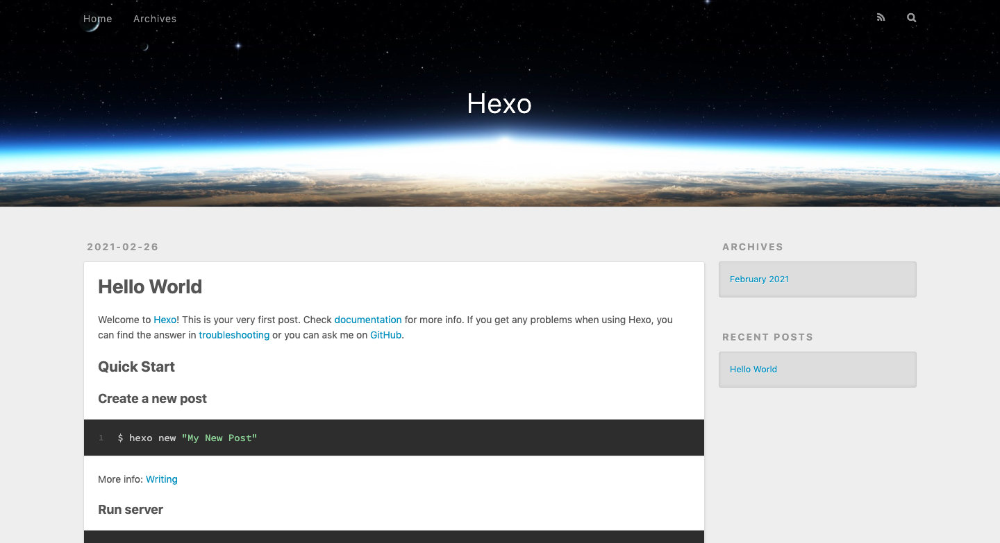
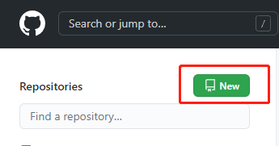
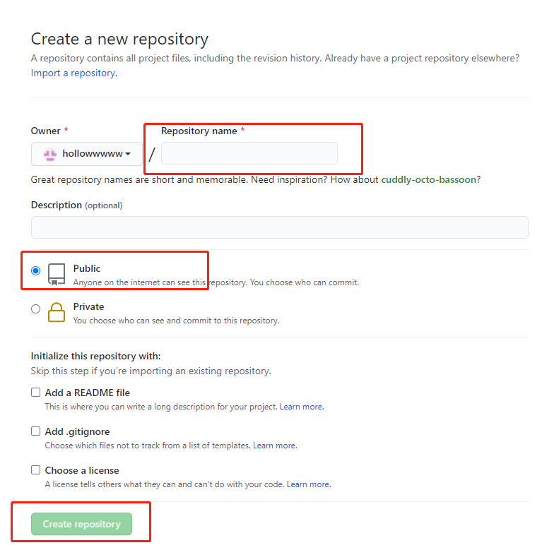

现在越来越多的人开始自建博客，搭建博客的工具也有许多。本篇文章就以hexo+github来搭建，希望能帮助到有需要的人。（注：本文中安装环境均为macOs）
Hexo安装
安装node.js
这步就不多说了，直接官网下载搞定
安装Hexo框架
博主的电脑是mac，所以直接在终端输入
$ sudo npm install -g hexo |
初始化博客项目
$ hexo init blogname |
启动Hexo服务
$ hexo s |
此时在浏览器中打开http://localhost:4000 可看到以下界面表示安装完成

创建Git远程仓库
注册GitHub账户
GitHub Pages是一个静态站点托管服务，可直接从GitHub上的存储库获取HTML，CSS和JavaScript文件，还可以选择在构建过程中运行这些文件并发布网站。
注意在取名时要细细斟酌，一旦命名将不能修改
若已有GitHub账户可跳过此步骤
创建仓库
点击New创建

命名
创建一个名为username.github.io的存储库，其中username是你在GitHub上的用户名

部署至Git
安装git插件
注意要在你的blog目录下安装
$ npm install hexo-deployer-git --save |
修改站点配置文件
打开站点根目录下的_config.yml文件，找到deploy这一栏，做如下更改
deploy: |
其中username替换成你自己的GitHub用户名
将本地项目推送到GitHub服务器
hexo clean //清理缓存 |
完成以上几步，打开浏览器输入username.github.io就可以访问你的个人网站啦
以上便是搭建hexo个人博客的全步骤，当然现在呈现的效果是有些简陋的
hexo支持个性化主题，可以根据自己的喜好进行更换。感兴趣的可以看看下篇如何更换主题